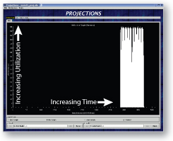
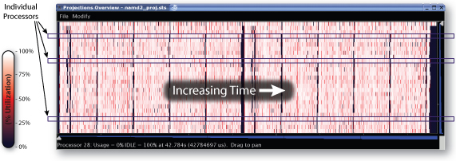

Projections is a performance visualization tool designed to work closely with the Charm++ Runtime System. The Charm++ Runtime System collects performance data about the Charm++ application during runtime. This data is then analyzed by Projections. Projections can present this data to the user using several different graphs/representations.
The Charm++ Runtime System keeps track of when each entry methods starts and stops. Additionally, it keeps track of the various messages that are sent by the entry methods (including aspects such as where the message is headed, the size of the message, and so on). This information is recorded in log files which are analyzed after the program has finished executing. The user can also choose to enable and disable the collection of the performance data dynamically during runtime.
|  | Summary: When projections is initially openned, a summary graph of the application execution is presented to the user (assuming the summary module was linked to the application; see the Compile Time Options section below). The utilization is an aggregate of all the processors. |
|  | Overview: In the overview graph, each processor is repressented by a horizontal bar with time increasing time from left to right. The color of the bar at that point in time represents the utilization of that processor (see the color scale to the left of the overview graph). |
{kind=link}
{kind=link}